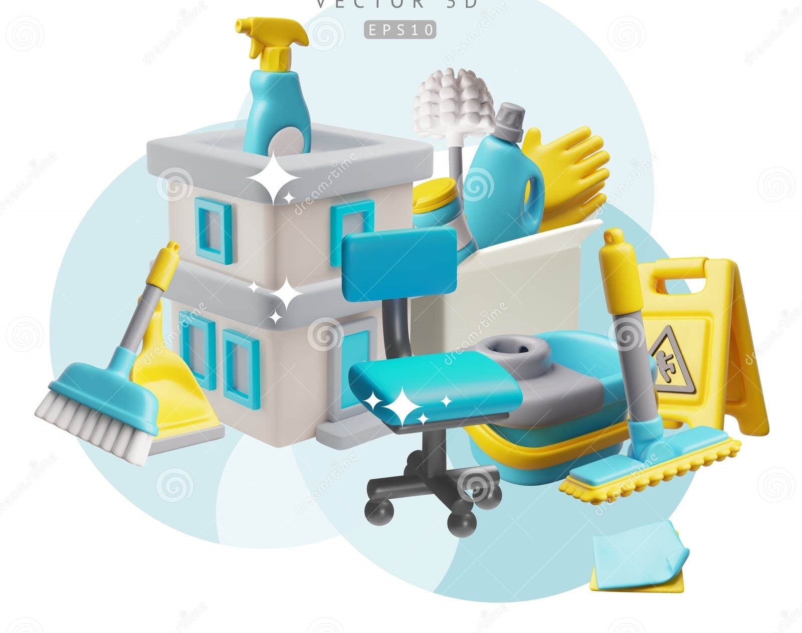
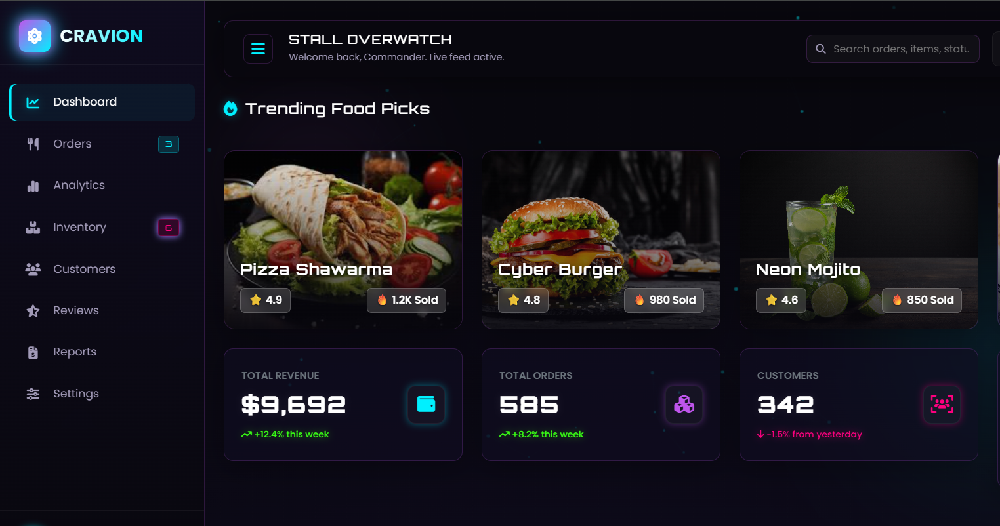
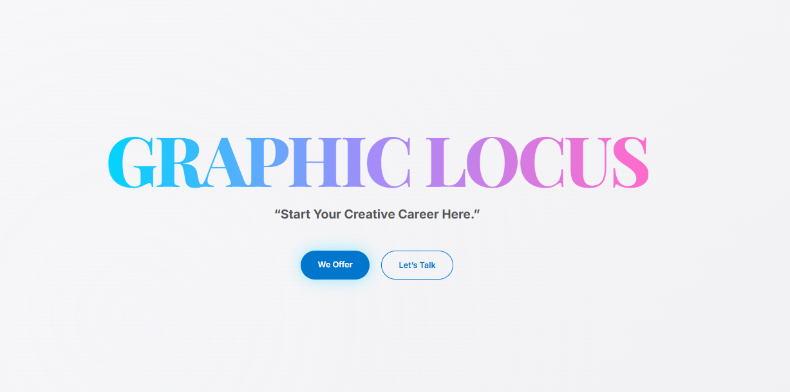

Portfolio
Junior Software Developer
Building clean, useful web applications with care.
I am a BCA graduate from Nagercoil focused on Java, MySQL, JavaScript, Angular, React, and full-stack web development. I enjoy turning ideas into simple, reliable interfaces and learning better ways to solve real problems.
- LocationNagercoil, Kanyakumari
- Emailrishikl4782@gmail.com
- Phone+91 93609 94782
Available for junior developer roles
About
Motivated developer with a practical full-stack foundation
I am Rishika, a passionate and detail-oriented software developer with hands-on practice in front-end development, backend logic, database integration, and responsive UI design. I like building applications that feel clear, fast, and comfortable for people to use.
2025BCA Graduate
82.3%College Score
3Internship Tracks
Skills
Technologies I use to design, build, and connect applications
Internship
Practical experience across frontend, backend, and database work
Node.js, MySQL, HTML, CSS, Bootstrap, JavaScript
Built full-stack web application features, worked with REST APIs, connected pages to MySQL data, and improved practical understanding of complete web flows.
React.js, Java, MySQL
Developed dynamic UI screens, practiced API integration, handled database-backed features, and followed structured coding practices for scalable applications.
Ecommerce Website Development
Built an ecommerce website using React with reusable components, product listing sections, clean navigation, responsive layouts, and a smooth shopping experience focused on clarity and usability.
Projects
Selected work focused on everyday digital workflows

Web AppOnline Household Service
A service-booking platform concept that helps users connect with trusted professionals for cleaning, plumbing, electrical work, and home repairs.
Ticket Registration
A simple ticket registration system for creating and tracking support requests so issues can be managed clearly from submission to follow-up.

DashboardCRAVION
A futuristic smart food analytics dashboard with sales tracking, inventory management, interactive charts, and a cyberpunk-inspired UI.

Creative WebGraphic Locus
A polished visual web project for presenting creative graphic work with responsive layouts, strong imagery, and clear browsing flow.
Education
Academic foundation in computer applications
Bachelor of Computer Applications
Arunachala Arts and Science College, Vellaichanthai, Kanyakumari
CGPA: 82.3%Higher Secondary
S.N.M. Hindu Vidyalaya, Krishnancoil, Nagercoil
Score: 84.5%Contact
Let us build something practical and polished
I am open to junior software developer opportunities, internships, and project collaborations where I can contribute, learn, and grow with a team.